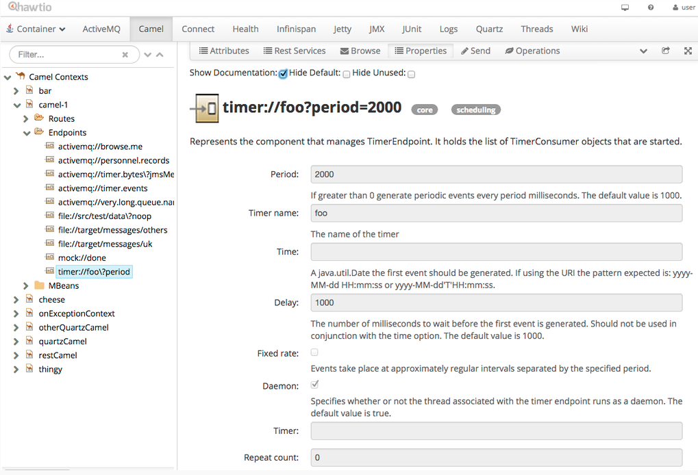
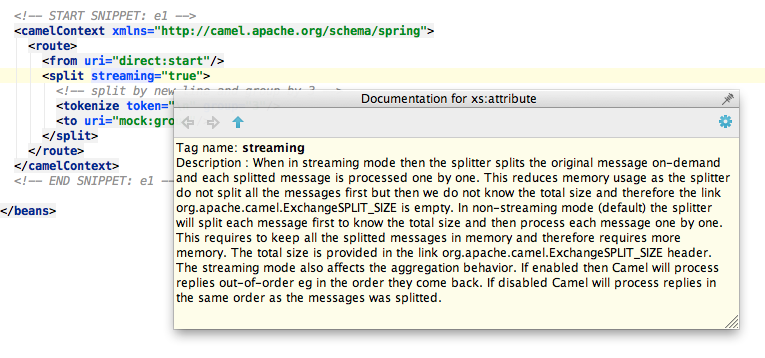
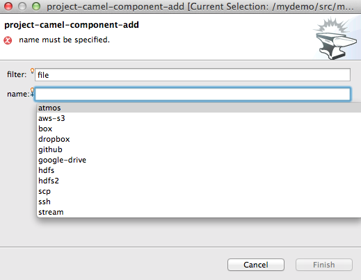
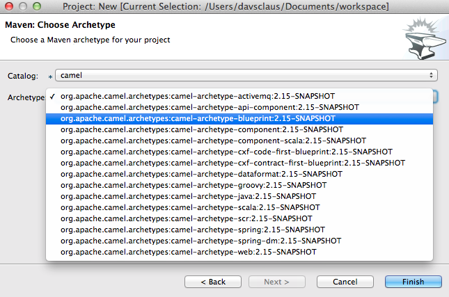

Fabric8 v2
CDI
Arquillian
by Ioannis Canellos / @iocanel and Claus Ibsen / @davsclaus
Overview
- Prologue
- CDI Extension
- Arquillian Extension
Prologue
Fabric8 v1
- Framework
- Tooling
Changes in Fabric8 v2
- Hello Kubernetes
- Bye bye OSGi
Hello Kubernetes
- Container management
- Service discovery
Bye bye OSGi
- Platform
- Framework(?)
CDI
The common denominator
CDI Extension
CDI Extension Features
- "Hybrid": Inside/Outside of Kubernetes
- Injection of Kubernetes Client
- Kubernetes Services as CDI Beans
- @Service Qualifier
Hybrid
- Inside: Understands env variables
- Outside: Uses the kubernetes api wheen needed
Client injection
- Env configured client
- Added as a "bean"
Service injection
For each injection point annotated with @Service
- Lookup env for coords
- Query Kubernetes for Id & Namespace
- Query Kubernetes for Id?
Annotated types: String or URL
How cool would it be...
To not only inject the service coords...
...but also the clients?

@Produces & @Services
Methods annotated with both act as a "converter"
- Generic: No need to specify which service
- We tell the framework how and it takes care of the rest
@Produces
@Service
ActiveMQConnectionFactory convert(@Service String url) {
return new ActiveMQConnectionFactory(url);
}
Next Steps
- Fabric8 apps should provide default "converters"
- Combine @Service and @PropertyConfig
Arquillian
What do we need to test?
- Code
- Docker Images
- Kubernetes Config
Big Bang Testing
We need to test everything as whole
Arquillian Cube?
- In container
- In app server
- Despite the name doesn't work with Kubernetes
Fabric8 Arquillian Extension
- Convention over configuration
- Kubernetes Support
- Dependency Management
- Kubernetes constructs as Arquillian Resources
- Assertion DSL for Kubernetes constructs
Standard Conventions
- Where Kubernetes Master lives
- Discovery of kubernetes json
- Discovery of "dependencies"
Dependency Discovery
- Using the classpath
- Using the pom.xml
- Explicitly specified as a URL (works with mvn URLs too)
mvn:${project.groupId}/fabric8-mq/${project.version}/json/kubernetes
Arquillian Resources
- Session
- Pods
- Replication Controllers
- Services
What is a Session?
- The interaction of the extension with Kubernetes
- Shares lifecycle with the test Suite
- Has a unique Kubernetes Namespace
- What happens in session stays in session
Arquillian Resources Example
@RunWith(Arquillian.class)
public class SuperCoolTest {
@ArquillianResource
KubernetesClient client;
@ArquillianResource
static Session session;
@Test
public void superTest() {
//Do stuff
}
}
Assertion Examples
@Test
public void superTest() {
assertThat(client)
.replicationController("super-controller", session.getNamespace())
.isNotNull();
assertThat(client).pods()
.runningStatus()
.filterNamespace(session.getNamespace())
.haveAtLeast(3, (Condition)(podSchema) ->{return true});
}
Questions?
The End of Part I
Camel tooling for iPaaS
3 kinds of developers
- Hawtio: expects to do everything from inside the web browser
- Java IDE: wants to do everything inside their IDE (e.g. using the camel route designer in eclipse)
- Java CLI: a java + maven kinda guy who may use an IDE or editor
Goals
- Offer tooling for all 3 kinds of developers
- Web browser tools (hawtio)
- Eclipse tools (JBDS)
- Command line (forge & maven)
We want to avoid
- Writing 3 sets of independt tools
- Writing tools for each Camel component (there is 170+)
- Being locked to specific version of Camel
Where are we today?
- Apache Camel 2.15 (GA next month)
- Forge Camel commands
- hawtio-forge
- Eclipse Camel editor (Lars's team)
- Eclipse Data Mapper (Keith's team)
Apache Camel 2.15
- Massive improvements
- Out of the box documentation for
- EIPs, Components, Data Formats, Languages
- All of them categorized (we use the term label)
- ... at both design and runtime
Documentation APIs
- CamelContext - Java API
- ManagedCamelContextMBean - JMX API
- json schmea files in JARs
- camel-catalog JAR (has everything)
How does it work?
@UriEndpoint(scheme = "timer", consumerOnly = true, consumerClass = TimerConsumer.class, label = "core,scheduling")
public class TimerEndpoint extends DefaultEndpoint implements MultipleConsumersSupport {
@UriPath @Metadata(required = "true")
private String timerName;
@UriParam
private Date time;
@UriParam(defaultValue = "1000")
private long period = 1000;
@UriParam(defaultValue = "1000")
private long delay = 1000;
@UriParam
private boolean fixedRate;
@UriParam(defaultValue = "true")
private boolean daemon = true;
@UriParam(defaultValue = "0")
private long repeatCount;
@UriParam
private Timer timer;
JSon Schema file
{
"component": {
"kind": "component",
"scheme": "timer",
"description": "The Timer Component is for generating message exchanges when a timer fires.",
"label": "core,scheduling",
"consumerOnly": "true",
"javaType": "org.apache.camel.component.timer.TimerComponent",
"groupId": "org.apache.camel",
"artifactId": "camel-core",
"version": "2.15-SNAPSHOT"
},
"componentProperties": {
},
"properties": {
"timerName": { "kind": "path", "required": "true", "type": "string", "javaType": "java.lang.String", "deprecated": "false", "description": "The name of the timer" },
"time": { "kind": "parameter", "type": "object", "javaType": "java.util.Date", "deprecated": "false", "description": "A java.util.Date the first event should be generated. If using the URI the pattern expected is: yyyy-MM-dd HH:mm:ss or yyyy-MM-dd'T'HH:mm:ss." },
"period": { "kind": "parameter", "type": "integer", "javaType": "long", "deprecated": "false", "defaultValue": "1000", "description": "If greater than 0 generate periodic events every period milliseconds. The default value is 1000." },
"delay": { "kind": "parameter", "type": "integer", "javaType": "long", "deprecated": "false", "defaultValue": "1000", "description": "The number of milliseconds to wait before the first event is generated. Should not be used in conjunction with the time option. The default value is 1000." },
"fixedRate": { "kind": "parameter", "type": "boolean", "javaType": "boolean", "deprecated": "false", "defaultValue": "false", "description": "Events take place at approximately regular intervals separated by the specified period." },
"daemon": { "kind": "parameter", "type": "boolean", "javaType": "boolean", "deprecated": "false", "defaultValue": "true", "description": "Specifies whether or not the thread associated with the timer endpoint runs as a daemon. The default value is true." },
"repeatCount": { "kind": "parameter", "type": "integer", "javaType": "long", "deprecated": "false", "defaultValue": "0", "description": "Specifies a maximum limit of number of fires. So if you set it to 1 the timer will only fire once. If you set it to 5 it will only fire five times. A value of zero or negative means fire forever." },
"timer": { "kind": "parameter", "type": "object", "javaType": "java.util.Timer", "deprecated": "false", "description": "To use a custom Timer" },
"exchangePattern": { "kind": "parameter", "type": "string", "javaType": "org.apache.camel.ExchangePattern", "enum": [ "InOnly", "RobustInOnly", "InOut", "InOptionalOut", "OutOnly", "RobustOutOnly", "OutIn", "OutOptionalIn" ], "deprecated": "false", "defaultValue": "InOnly", "description": "Sets the default exchange pattern when creating an exchange." },
"synchronous": { "kind": "parameter", "type": "boolean", "javaType": "boolean", "deprecated": "false", "defaultValue": "false", "description": "Sets whether synchronous processing should be strictly used or Camel is allowed to use asynchronous processing (if supported)." }
}
}
Screenshot from hawtio
Apache Camel 2.15 cont.
- XML DSL all EIPs documented
- Maven Archetype Catalog
- Reuse Camel Karaf Commands
- camel-catalog JAR
XML DSL documented
If enabled then processing each splitted messages occurs concurrently. Note the caller thread will still wait until all messages has been fully processed before it continues. Its only processing the sub messages from the splitter which happens concurrently.
Sets a reference to the AggregationStrategy to be used to assemble the replies from the splitted messages into a single outgoing message from the Splitter. By default Camel will use the original incoming message to the splitter (leave it unchanged). You can also use a POJO as the AggregationStrategy
This option can be used to explicit declare the method name to use when using POJOs as the AggregationStrategy.
If this option is false then the aggregate method is not used if there was no data to enrich. If this option is true then null values is used as the oldExchange (when no data to enrich) when using POJOs as the AggregationStrategy
Refers to a custom Thread Pool to be used for parallel processing. Notice if you set this option then parallel processing is automatic implied and you do not have to enable that option as well.
When in streaming mode then the splitter splits the original message on-demand and each splitted message is processed one by one. This reduces memory usage as the splitter do not split all the messages first but then we do not know the total size and therefore the link org.apache.camel.ExchangeSPLIT_SIZE is empty. In non-streaming mode (default) the splitter will split each message first to know the total size and then process each message one by one. This requires to keep all the splitted messages in memory and therefore requires more memory. The total size is provided in the link org.apache.camel.ExchangeSPLIT_SIZE header. The streaming mode also affects the aggregation behavior. If enabled then Camel will process replies out-of-order eg in the order they come back. If disabled Camel will process replies in the same order as the messages was splitted.
Will now stop further processing if an exception or failure occurred during processing of an org.apache.camel.Exchange and the caused exception will be thrown. Will also stop if processing the exchange failed (has a fault message) or an exception was thrown and handled by the error handler (such as using onException). In all situations the splitter will stop further processing. This is the same behavior as in pipeline which is used by the routing engine. The default behavior is to not stop but continue processing till the end
Sets a total timeout specified in millis when using parallel processing. If the Splitter hasn't been able to split and process all the sub messages within the given timeframe then the timeout triggers and the Splitter breaks out and continues. Notice if you provide a TimeoutAwareAggregationStrategy then the timeout method is invoked before breaking out. If the timeout is reached with running tasks still remaining certain tasks for which it is difficult for Camel to shut down in a graceful manner may continue to run. So use this option with a bit of care.
Uses the Processor when preparing the org.apache.camel.Exchange to be send. This can be used to deep-clone messages that should be send or any custom logic needed before the exchange is send.
Shares the org.apache.camel.spi.UnitOfWork with the parent and each of the sub messages. Splitter will by default not share unit of work between the parent exchange and each splitted exchange. This means each splitted exchange has its own individual unit of work.
If enabled then the aggregate method on AggregationStrategy can be called concurrently. Notice that this would require the implementation of AggregationStrategy to be implemented as thread-safe. By default this is false meaning that Camel synchronizes the call to the aggregate method. Though in some use-cases this can be used to archive higher performance when the AggregationStrategy is implemented as thread-safe.
Screenshot from IDEA
Forge Camel Commands
- Create new projects
- Add components
- Add routes
- Configure components
- Configure endpoints
- ... everything but drag/drop GUI editor
Screenshot from JBDS
Maven Archetype Catalog
- Contains all Camel archetypes
- Publishd to Maven Central
- Included in camel-catalog JAR
Used in JBoss Forge
Press to confirm, or +C to cancel.
? Catalog: [0-1] 1
[0] ( ) org.apache.camel.archetypes:camel-archetype-activemq:2.15-SNAPSHOT
[1] ( ) org.apache.camel.archetypes:camel-archetype-api-component:2.15-SNAPSHOT
[2] ( ) org.apache.camel.archetypes:camel-archetype-blueprint:2.15-SNAPSHOT
[3] ( ) org.apache.camel.archetypes:camel-archetype-component:2.15-SNAPSHOT
[4] ( ) org.apache.camel.archetypes:camel-archetype-component-scala:2.15-SNAPSHOT
[5] ( ) org.apache.camel.archetypes:camel-archetype-cxf-code-first-blueprint:2.15-SNAPSHOT
[6] ( ) org.apache.camel.archetypes:camel-archetype-cxf-contract-first-blueprint:2.15-SNAPSHOT
[7] ( ) org.apache.camel.archetypes:camel-archetype-dataformat:2.15-SNAPSHOT
[8] ( ) org.apache.camel.archetypes:camel-archetype-groovy:2.15-SNAPSHOT
[9] ( ) org.apache.camel.archetypes:camel-archetype-java:2.15-SNAPSHOT
[10] ( ) org.apache.camel.archetypes:camel-archetype-scala:2.15-SNAPSHOT
[11] ( ) org.apache.camel.archetypes:camel-archetype-scr:2.15-SNAPSHOT
[12] ( ) org.apache.camel.archetypes:camel-archetype-spring:2.15-SNAPSHOT
[13] ( ) org.apache.camel.archetypes:camel-archetype-spring-dm:2.15-SNAPSHOT
[14] ( ) org.apache.camel.archetypes:camel-archetype-web:2.15-SNAPSHOT
Screenshot from JBDS
Reuse Camel Karaf Commands
- commands-core module for reuse
- Forge commands use Jolokia
Used in JBoss Forge
[forge-distribution-2.14.1-SNAPSHOT]$ camel-connect --url http://localhost:8080/hawtio/jolokia/
***SUCCESS*** Connected to http://localhost:8080/hawtio/jolokia/
[forge-distribution-2.14.1-SNAPSHOT]$ camel-route-list
Context Route Status
------- ----- ------
camel-1 helloRoute Started
[forge-distribution-2.14.1-SNAPSHOT]$
Camel Catalog
- Standalone JAR
- Contains all schemas
- Java API
- JMX API
- One stop for tooling
Camel Catalog Tree
davsclaus:~/workspace/camel/platforms/catalog/target/classes (master)/$ tree -d
.
├── META-INF
└── org
└── apache
└── camel
└── catalog
├── archetypes
├── components
├── dataformats
├── languages
├── models
└── schemas
Used in JBoss Forge
@Override
public ArchetypeCatalog getArchetypeCatalog() {
if (cachedArchetypes == null) {
// use the camel catalog to load the archetypes
String xml = new DefaultCamelComponentCatalog().archetypeCatalogAsXml();
if (xml != null) {
try {
cachedArchetypes = new ArchetypeCatalogXpp3Reader().read(new StringReader(xml));
} catch (Exception e) {
logger.log(Level.SEVERE, "Error while retrieving archetypes", e);
}
}
}
return cachedArchetypes;
}
Hawtio Forge
Vision
- Tooling for the web developer
- Hawtio with forge
- Reuse forge commands
- Rest API
- Early stuff, James just started end of last week